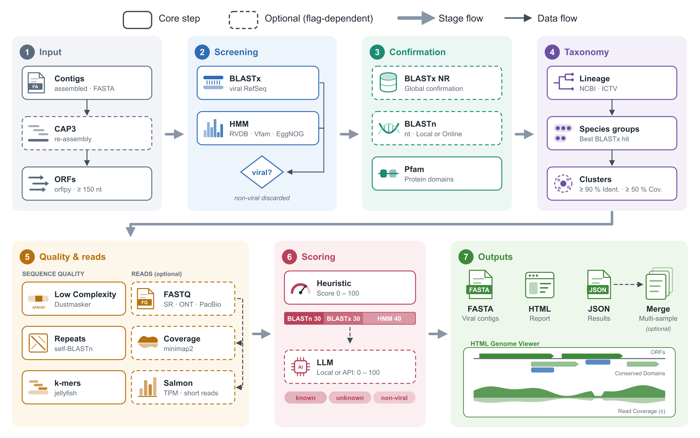

Tools
Open-source software developed in the laboratory to find, classify and interpret viruses in sequencing data. Pick a tool and step through the analysis.
Tool · Open source · Free
ViralQuest
Finding viruses hidden in genetic data
Viruses are everywhere: in plants, animals, people and the environment. Yet most of them are still unknown. Scientists can now read, all at once, the genetic material of an entire sample, such as a leaf, an insect or a soil sample. Among millions of sequences, one question remains hard to answer: which of them belong to viruses?
ViralQuest was built to answer that question. It is free, open-source software developed at BioVirLab, and its results have been published in an international scientific journal.
How it works
Millions of sequences from a whole sample
The starting point is the genetic material read from an entire sample — a leaf, an insect, some soil — with sequences from every organism in it mixed together.
Searching the data for viruses
ViralQuest sifts through large volumes of genetic data and finds virus sequences, including those of viruses not yet described.
Comparison against international databases
The sequences found are compared against large international reference databases.
Viral group and genes
For each virus, the tool indicates which group it most likely belongs to and which genes it carries.
Interactive report in the browser
At the end of the analysis, ViralQuest produces a report that opens in any web browser, making results easy to interpret and share.
- charts
- viral genome maps
- organized tables
Pipeline overview

What it is for
Discover new viruses
In different organisms and environments.
Understand viral diversity
See which viruses are present in a sample.
Speed up research
In health, agriculture and the environment, turning raw data into useful information.
Pipeline · Snakemake · Open source
VAPOR
Viral And Prokaryotic mOdular pipelineR
VAPOR is a Snakemake pipeline that takes metagenomic sequencing reads — short (Illumina, paired or single-end) or long (Nanopore and PacBio HiFi) — and automatically runs a series of analyses, configured by a single parameter file.
Pipeline stages
Read quality control
Reads are cleaned and assessed before any further analysis.
- fastp
- NanoPlot
- Porechop
- Filtlong
Assembly into contigs
MEGAHIT for short reads; Flye with Medaka, or metaMDBG, for long reads. Assemblies are evaluated with QUAST. An optional module classifies reads directly, without assembly.
- MEGAHIT
- Flye
- Medaka
- metaMDBG
- QUAST
- Sylph
Viral branch
Detects viral contigs, assesses completeness, excises proviruses, bins contigs into genomes and builds a vOTU catalogue, clustering viruses from all samples by similarity.
- VirSorter2
- geNomad
- CheckV
- vRhyme
- skani
Prokaryotic branch
Reconstructs genomes with several binners, picks the best bins, checks quality and contamination, removes redundancy and classifies them.
- MetaBAT2
- VAMB
- SemiBin2
- Binette
- CheckM2
- GUNC
- GTDB-Tk
Taxonomy, hosts and annotation
Viral taxonomy against INPHARED, host prediction, screening for antibiotic resistance genes and defence systems, and functional annotation.
- MMseqs2
- PHIST
- AMRFinderPlus
- RGI
- DefenseFinder
- Pharokka
- Phold
- Bakta
- EggNOG
Abundance and diversity
Per-sample abundance and alpha and beta diversity metrics.
- CoverM
optional module that can be switched on in the parameter file
Outputs
Genomes
Organized viral and prokaryotic genomes, with circular maps.
Tables
Taxonomy, quality, hosts, resistance and defence genes.
Matrices and diversity
Per-sample presence and abundance; alpha and beta diversity.
Reports
A MultiQC report and an interactive HTML report bringing it all together.
Tool · Command line · Open source
viralfetch
Virus taxonomy, metadata and sequences, from the terminal
viralfetch is a command-line tool for querying and downloading viral taxonomy, metadata, sequences, and the per-family phylogenetic trees and alignments. A virus name is enough: the tool finds its lineage, its GenBank/RefSeq accessions and the related data, combining four sources in a single query.
Every output is also available as --json, ready for
scripts and jq; downloaded data is cached, and names the
local index does not know are looked up in NCBI taxonomy.
pip install viralfetch
Commands
viralfetch tax Taxonomic lineage
Shows the full ICTV lineage (realm to species). It can also query NCBI taxonomy directly, or compare both side by side, highlighting where they diverge.
- --ncbi
- --compare-ncbi
$ viralfetch tax Coronaviridae
╭─ Coronaviridae (family) ──╮
│ realm Riboviria │
│ kingdom Orthornavirae │
│ phylum Pisuviricota │
│ class Pisoniviricetes │
│ order Nidovirales │
│ suborder Cornidovirineae │
│ family Coronaviridae ◀ │
╰────────────────────────────╯viralfetch members Taxa below a group
Lists a group's taxa at a chosen rank, just the counts, or the full descendant tree.
- --rank
- --count
- --tree
$ viralfetch members Coronaviridae --rank genus
genera in family Coronaviridae
┏━━━━━━━━━━━━━━━━━━┳━━━━━━━━━┓
┃ genus ┃ species ┃
┡━━━━━━━━━━━━━━━━━━╇━━━━━━━━━┩
│ Alphacoronavirus │ 26 │
│ Alphaletovirus │ 1 │
│ Alphapironavirus │ 1 │
│ Betacoronavirus │ 14 │
│ Deltacoronavirus │ 7 │
│ Gammacoronavirus │ 5 │
└──────────────────┴─────────┘
6 generaviralfetch seq NCBI sequences
Resolves accessions locally from the VMR and fetches metadata, FASTA or GenBank records from NCBI. For a whole group, it first shows a local estimate of the download size.
- --meta
- --fasta
- --gb
- --taxon
- --protein
$ viralfetch seq "Betacoronavirus pandemicum" --fasta -o out.fa
Wrote 4 fasta record(s) for Betacoronavirus pandemicum to out.fa
$ viralfetch seq --taxon Coronaviridae --meta
╭─ Coronaviridae (family) — download estimate ─╮
│ species 54 │
│ isolates 59 │
│ accessions 59 │
╰──────────────────────────────────────────────╯viralfetch text ICTV Report chapter
Fetches the family's ICTV Report chapter as Markdown, with tables and italicised scientific names. Figures can be drawn right in the terminal.
- --section
- --raw
- --images
$ viralfetch text Coronaviridae --section summary
Family: Coronaviridae
Source: https://ictv.global/report/chapter/coronaviridae/coronaviridae
Content is licensed CC BY 4.0
──────────────────────────────────────────────────────
Summary
Members of the family Coronaviridae, a monophyletic group
of viruses in the order Nidovirales, are enveloped,
positive-sense RNA viruses …viralfetch tree Phylogenetic tree
Draws the family's phylogenetic tree, offline, highlighting the queried species or genus.
- --tree N
- --newick
- --chapter
$ viralfetch tree "Betacoronavirus pandemicum"
Coronaviridae · Figure 5A · RdRp (AA) · 55 tips · 2 matches
┌─ Alphacoronavirus BT020
┌─┤
│ └─ Scotophilus bat coronavirus 512
─┤ …
│ ┌ severe acute respiratory syndrome coronavirus ← match
└─────┤
└ severe acute respiratory syndrome coronavirus 2 ← matchviralfetch msa Multiple sequence alignment
Shows the alignment behind the tree, coloured by residue, with the queried sequence marked. Exports the alignment as FASTA.
- --range
- --consensus
- --fasta
$ viralfetch msa "Betacoronavirus pandemicum" --consensus
Coronaviridae · tree1 · AA · cols 1–60 of 316 · 55 seqs
consensus KHFFFAQDGDAAITDYDYYRYNRPTMLDICQALFVYEVVDKYFD
▶ severe acute respir KHFFFAQDGNAAISDYDYYRYNLPTMCDIRQLLFVVEVVDKYFD
Alphapironavirus bona EHFFYLQPRDCAVTDFDYYRFNRPTVLDPLQFRFVYNVVKHYFK
… 0^ 20^ 40^Data sources
ICTV VMR
Taxonomic hierarchy, exemplar isolates and GenBank/RefSeq accessions. The local index, embedded in the package.
NCBI E-utilities
Sequence metadata, nucleotide and protein sequences and NCBI taxonomy, fetched on demand.
ICTV Report
The descriptive chapter text for each family, with figures.
ICTV Report trees
Per-family Newick trees and amino-acid and nucleotide alignments, bundled with the package.